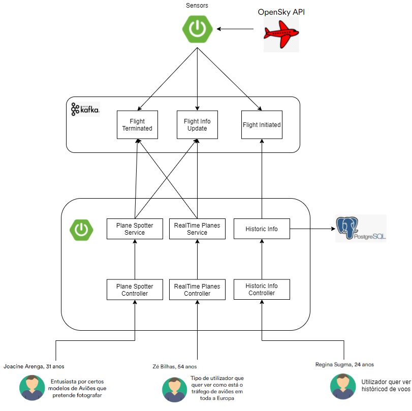

About Us
The system intent is to provide tracking information regarding aircrafts on a global and individual level displayed on a dashboard.
The data is collected from the OpenSky Api and processed in order to support filtering and different sorts of visualization.
The purpose of the system will be to allow the user to have an immediate understanding on the scale of the air traffic at the moment, as well as other statistics per plane that he might be interested in (such as speed, route, etc).
Features:
- Individual tracking information - route, average speed, altitude profile, ...
- Online dashboard - view all vehicles in a given moment (UI) and filter views
- Strategic dashboard - identify common routes ( density maps ) , compare planes from same service routes …
- Personal tracker … for curious - tracking events on specific plane, route
Documentation
- All
- Scenarios
- Client Area
- Personas
- Architecture
Client Area
InterFlight is a system that has the objective of allowing to show in real time, a set of ongoing flights. It also has the capability to save flights that already took place using postgreSQL as a database. On the interface, the user has the possibility to select fights that started on a Country from Europe or select a certain type of plane model. The API that we used is from OpenSky and it allows us to recieve data from flights in real time, sometimes with a delay that can cause some delays or problems in InterFlight.
Scenarios
Personas
- Zé Bilhas , 54 years old
Someone which is curious about European air traffic from time to time and whishes to receive realtime information about the ongoing flights
- Joacine Arenga, 31 years old
Airplane enthusiast who plans to photograph different models of aircrafts. Joacine hopes interFlight will be usefull by being hable to filter planes by model and know the current location of planes she is interested in.
- Regina Sugma, 24 years old
User that whishes to have information about flight history in the last days.
System Architecture

Weekly Timeline Report
The first week, the priority was to choose the theme and the use cases of the project. The majority of the work was done to setup the enviroment in code ua.
At the end of the Third week, we already had the basic structure for the architecture with some user cases and topics defined. Also there was a basic implementation of the backend with the Sensor application consuming the OpenSky API and a basic implementation of the application Interflight with a basic database integration and docker.
By the fifth week, there was already big improvements on the backend and also major development on the pipeline for Jenkins to allow continuous integration and continuous delivery.
On the sixth week, there was a basic implementation for the Behaviour Driven Development with the use of Cucumber, there was also some improvments mande on the backend, jenkins pipeline, and a basic frontend using react.
At the seventh week, there was little improvements made to the backend(server sent events) and jenkins pipeline, but this was the week where ELK had a basic implementation, improvements on testing, and major improvements on frontend React.
The last week, was basically checking if all the implementations were working as intended with minor improvements on the backend and some development with ELK.